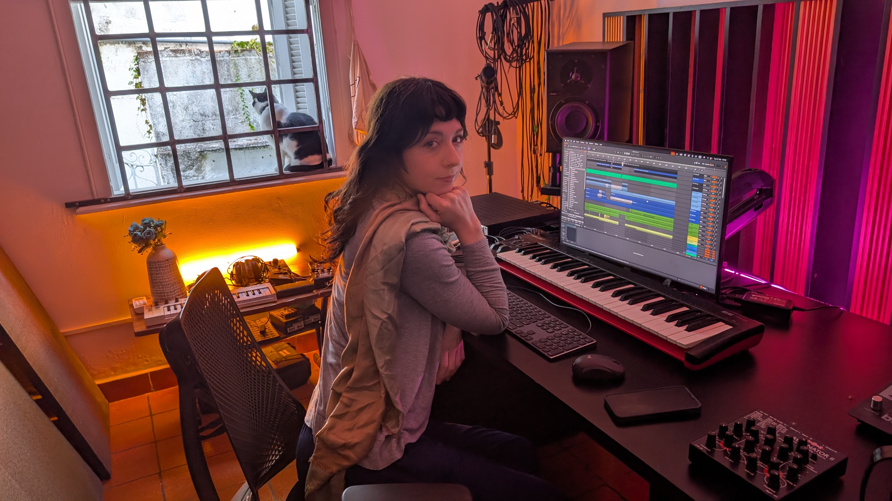
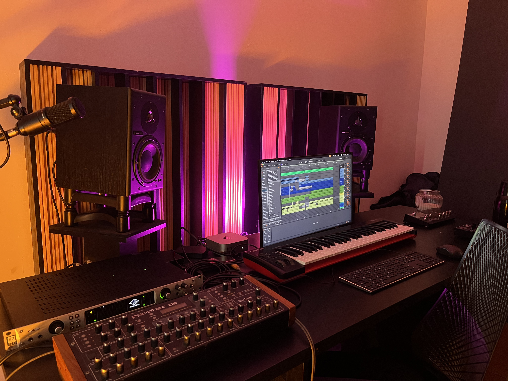
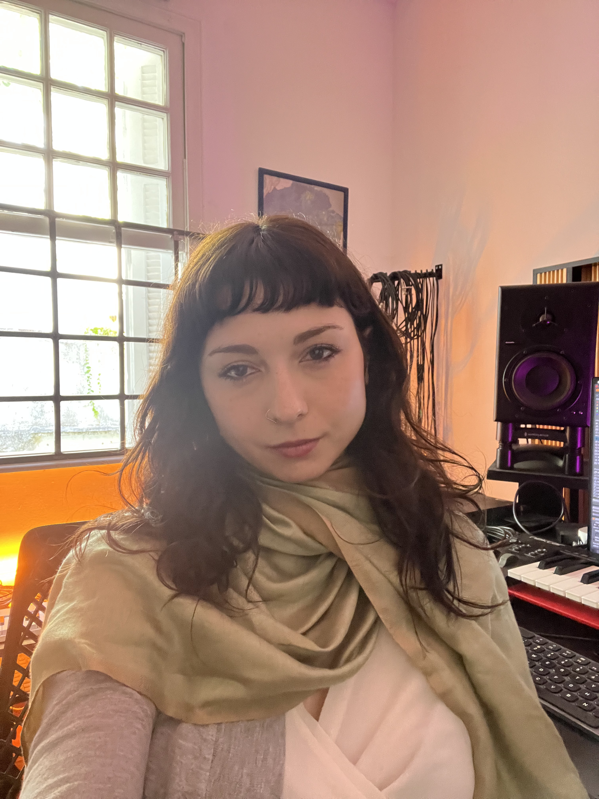
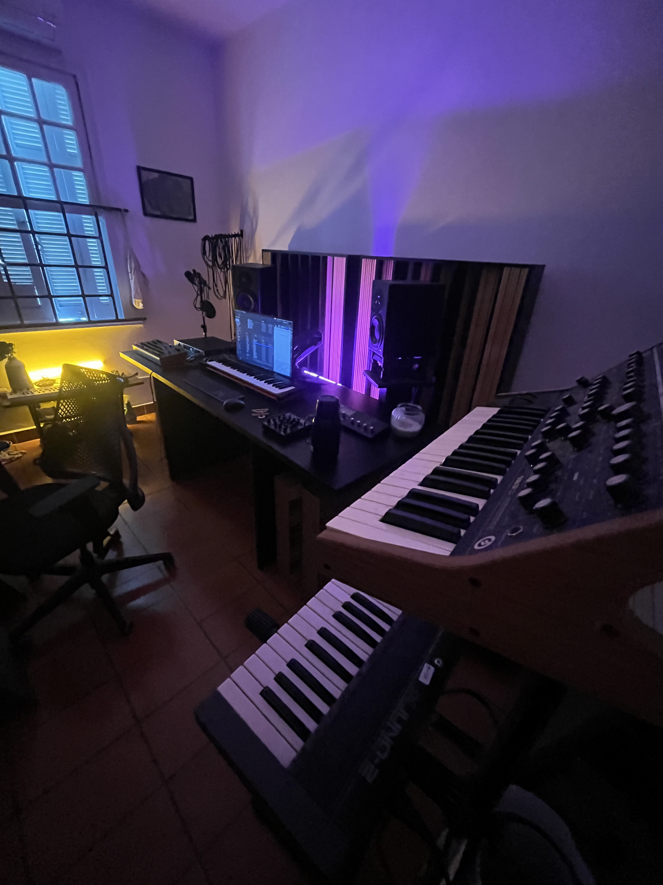
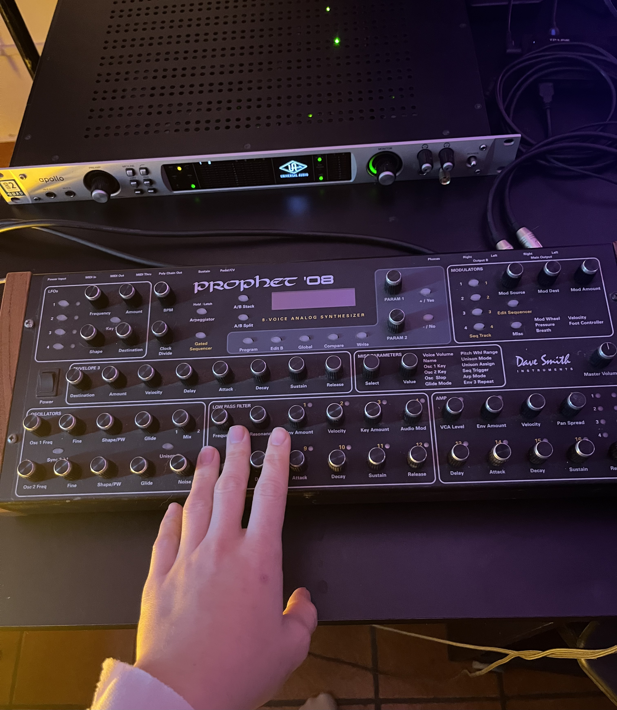
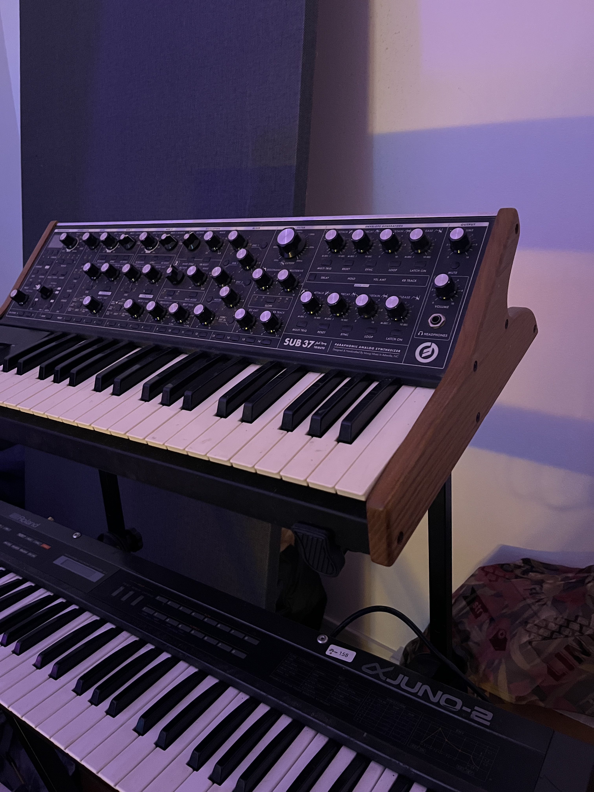

toque no video para ativar/desativar som
colaborar
Produtora musical, compositora de trilha sonora, mixadora e sound designer com quinze anos de experiência e uma abordagem construída sobre dois eixos complementares:

eixo um
como DJ e produtora com longa experiência no circuito underground de música eletrônica brasileiro e internacional, além de 8 anos sendo artista-residente da festa e produtora do selo Mamba Negra, mantenho ouvidos atentos no que há de mais novo no universo da música eletrônica — do baile funk, dubstep ao techno. Acompanho o que se renova constantemente por meio da internet mais profunda; os timbres em constante mutação da música eletrônica, remexidos pela lógica memética pós-2010 em plena aceleração.

eixo dois
De um lugar mais introspectivo, utilizo dados de ciências naturais e humanas como ferramentas de composição, construo paisagens e ecossistemas sonoros complexos para narrativas enraizadas no mito, na elipse e na especificidade cultural. A seção de ecossistemas sonoros na página inicial deste site mostra onde isso leva.

o que ofereço
Quinze anos de experiência em produção musical e sound design com raízes na música eletrônica underground de São Paulo e afora — incluindo oito anos como artista-residente na Mamba Negra. Essa trajetória me conferiu um vocabulário sonoro que abrange funk mandelão, automotivo, eletrônica contemporânea de sonoridade mais agressiva à emulação de ecossistemas sonoros complexos por meio de um sound design zeloso e elegante, sempre alinhados com o que há de mais novo.

abordagem
Componho com sintetizadores analógicos e digitais e manipulo samples por meio de técnicas destrutivas, tendo cuidado com cada milissegundo de um som específico além de alta habilidade com colagens sonoras. Em um projeto recente de 2025, gravei e compilei uma biblioteca de sons amazônicos de aves, sons minerais, corpos aquáticos, pegadas e insetos. A ideia é produzir sons que ainda não existem com as ferramentas citadas aqui.

onde faço diferença
Cinema e séries: trilha e sound design para narrativas em elipse, que remetem às diversas realidades brasileiras. Maleabilidade em texturas sonoras, sejam orgânicas ou agressivas.
Publicidade: marcas com identidade ambiental e cultural. Eletrônica atual — funk, batidas agressivas, sonoridades de pista.
Identidade sonora: projetos que precisam de uma cor sonora específica e difícil de categorizar. Sustentabilidade, cultura, tecnologia, diversidade.
Instalações e novas mídias: experiências imersivas, mundos sonoros gerativos, ambientes sensoriais construídos a partir de dados e fenômenos naturais.
